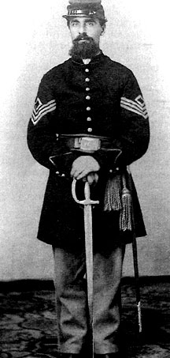

|

NAME: John Clark Ely
BORN: 1828
DIED: 1865
ALLEGIANCE: Union
HIGHEST RANK: 2nd Lieutenant (never mustered)
UNIT: 115th Ohio Volunteer Infantry, Company C
RECORD: Enlisted August 9, 1862; mustered into
Company C of 115th Ohio Volunteer Infantry as sergeant.
Eventually imprisoned at Andersonville, Georgia. Paroled in
March 1864. Killed in explosion of Sultana, April 27, 1865.
|
|
In one of those ironic twists of fate, John Clark Ely
survived almost three years of military service during the
Civil War, part of that time as an inmate at the
Confederacy's most notorious prison, only to die in a freak
accident on his way home. Sadly, many of his comrades shared
his bizarre fate.
Ely was born in Franklinville, New York, but spent the
greater part of his life in northern Ohio, where he married
Julia Richmond in 1856 and began a family. When the 115th
Ohio Volunteer Infantry was organized in July and August
1862 for three years' service, Ely enlisted as a sergeant in
Company C. After spending a year on guard duty in Ohio and
Kentucky, in November 1863 Ely, now a 1st Sergeant, was sent
with his unit to Murfreesboro, Tennessee, for more guard
duty--this time at blockhouses along the Nashville &
Chattanooga Railroad. The following year in December, Ely's
company fought Confederate Major General Joseph Wheeler's
forces in an engagement at La Vergne, Tennessee. On December
5, 1864, Ely was captured along with about 200 members of
the 115th Ohio.
In his diary, Ely described the nearly unbearable conditions
he suffered over the next months. Limited provisions and
wintry conditions took their toll on the captives, who
endured a forced march to Corinth, Mississippi. Ely and the
others were then transported to Meridian, Mississippi, where
they were incarcerated in a prison corral. On January 19,
1865, the prisoners traveled by rail and boat to the
infamous Andersonville Prison in Georgia.
As the months passed and the war's conclusion became
obvious, Ely's company was paroled and managed to purchase
transportation on the first train leaving Andersonville. The
men were sent to a parole camp in Vicksburg, Mississippi,
where they boarded the paddle wheeler Sultana for
their final trip home. On April 27, 1865, the seriously
overloaded vessel exploded near Memphis, killing 1,700
passengers, including Ely and many members of the 115th
Ohio. After surviving the deprivations of imprisonment, a
simple twist of fate had placed John Clark Ely aboard the
doomed riverboat, never to see his family again.
Source: Civil War Times Illustrated
41:4 (August 2002), 72.
|